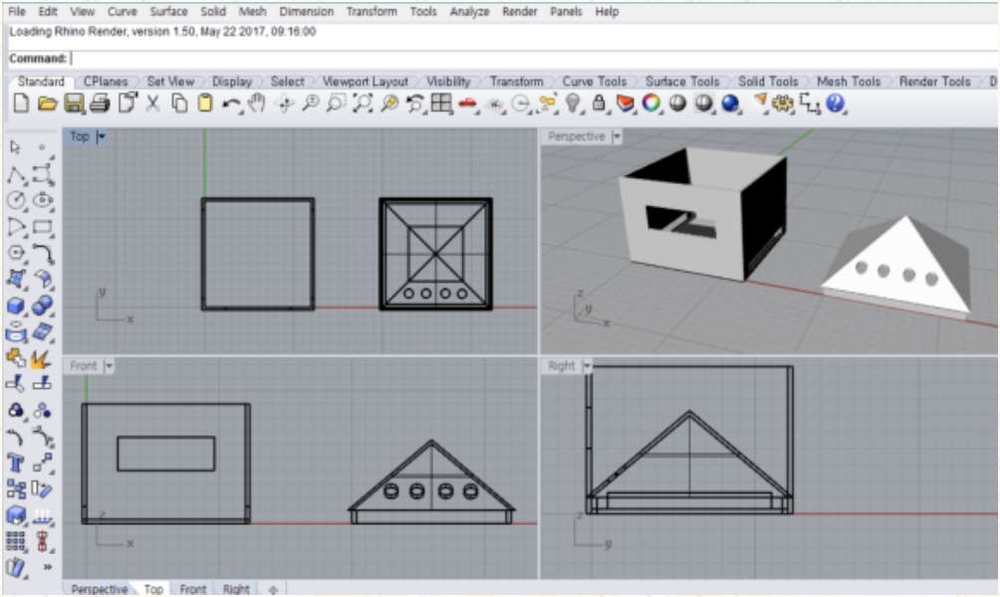

라즈베리파이로 만든 mp3입니다. 팀 프로젝트의 결과물로 만들었고, 앞뒤로 넘어가는 기능과 종료 기능을 포함하고 있습니다.
위 mp3의 설계도입니다. Rhino를 이용해 제작하였습니다.
아두이노로 만든 무드등입니다. 개인 프로젝트의 결과물로 만들었고, 근접 센서를 이용해 조명이 켜지면 시간이 지남에 따라 3색 LED가 색이 섞이면서 변화합니다.
아두이노로 만든 스마트 조명입니다. 팀 프로젝트의 결과물로 만들었고, 적외선 센서를 이용해 옷장이 열리면 자동으로 감지해 불을 켜고, wifi모듈을 이용해 날씨와 기온을 받아와 날씨를 보여주고 그에 맞는 옷을 추천해줍니다.